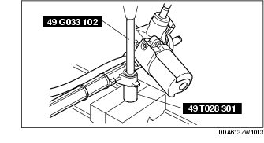

Steering gear and linkage disassembly
- • Place copper plates, rag, or similar material in a vise, when securing the mounting bracket portion of the steering gear.
1. Disassemble in the order indicated in the table.

.
|
1
|
Tie-rod end
(See Tie-rod End Disassembly Note.)
|
|
2
|
Locknut
|
|
3
|
Boot clamp
|
|
4
|
Boot band
|
|
5
|
Boot
|
|
6
|
Tie rod
(See Tie Rod Disassembly Note.)
|
|
7
|
Lock washer
|
|
8
|
Mounting rubber
|
|
9
|
Steering gear and linkage
|
Tie-rod End Disassembly Note
1. Place alignment marks as shown in the figure for proper installation.

2. Remove the tie-rod end.
Tie Rod Disassembly Note
1. Raise the crimped portions of the washer outward using a flathead screwdriver.
2. Secure the arrow portions of the steering rack to the vise using a piece of clean rag.
- • If the steering rack is secured to the vise without using a piece of clean rag, it may damage the friction surface of the steering rack. Always use a piece of clean rag when securing the steering rack to the vise.
- • If the steering rack is secured to the vise in an incorrect position, the steering gear could fall from the vise when performing the procedure and be damaged. Always secure at the specified position when securing the steering rack to the vise.

3. Remove the tie rod using the SST.

Mounting Rubber Disassembly Note
1. Press the mounting rubber out from the gear housing using the SSTs and a press.
